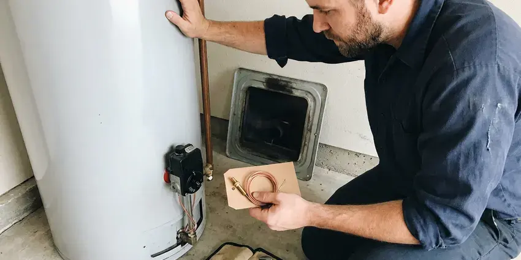
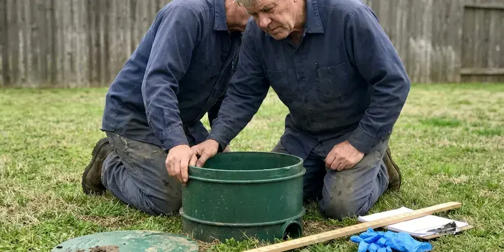
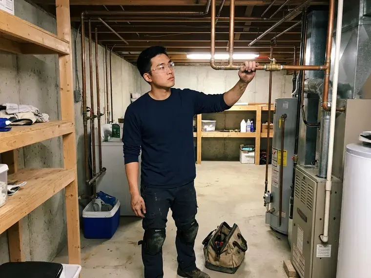
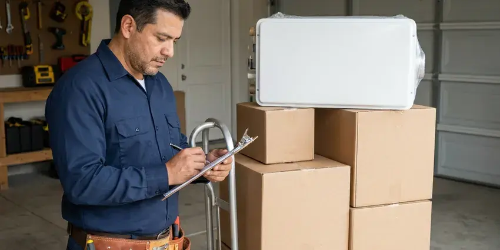

Foundation Leak Repair in Hemet, CA
Don't let foundation leaks damage your Hemet, CA property. Our trained technicians offer accurate and lasting repair solutions.
- Prevent Structural Damage
- Licensed & Insured
- Professional Foundation Repair
- Quick Leak Detection
Plumbing Leak Under Your Foundation? Get It Fixed in Hemet, CA.
Prompt action protects your foundation, flooring and soil, so we put a priority on foundation leak calls.
Trusted Foundation Leak Repair in Hemet, CA
FKM Plumbing understands the risks that foundation leaks bring to Hemet homes. Most homes in Southern California sit on concrete slabs, so slab leaks often show up as warm floors, damp carpet, or an unexplained jump in the water bill. We provide complete foundation leak repair, from precise detection to durable repair solutions, protecting the integrity of your home.
Our expertise includes:
- Restoring water flow and structural integrity.
- Electronic and acoustic leak detection beneath slabs and stem walls
- Direct repairs through concrete with careful patching and compaction

Additional Plumbing Repair Services in Hemet, CA
We offer expert plumbing repair services across Hemet, CA to fix leaks, restore flow, and keep your system running smoothly.


Local water heater repair by FKM Plumbing, Hemet



Septic Tank Repair in Hemet

Customers
Why Choose FKM Plumbing for Foundation Leak Repair in Hemet, CA?
We focus on effective, lasting repairs over quick fixes, so your investment in foundation integrity is sound. Our experienced plumbers address the root cause of the leak, not just the symptoms.
- Advanced Tools, We rely on modern leak detection equipment, including ground penetrating radar and video pipe inspection, to precisely locate hidden leaks without extensive demolition.
- Lasting Solutions, Our repairs use durable materials such as waterproof sealants, epoxy injections, and concrete patching compounds designed to hold up in varying soil conditions.
- Local Expertise, FKM Plumbing has broad experience with the common foundation types in Southern California, including slab and crawl space designs, and knows how each one is vulnerable to leaks.
Citywide Coverage
No matter which part of Hemet you live in, we can get a technician to you quickly. Foundation leaks need prompt attention, and we treat them that way.
Experienced Team
Our team is made up of highly trained and certified plumbers with years of experience in foundation leak detection and repair. They know the foundation issues that Southern California homes face.
Safety-First Approach
For every foundation leak repair, FKM Plumbing puts a priority on safety and compliance with all Southern California plumbing standards. Our methods are designed to limit disruption while making sure the repair is robust and meets all regulatory requirements.
Trusted Certified Hemet Plumbing Services Professionals
At FKM Plumbing, we take pride in providing certified plumbing services throughout Hemet, CA. Backed by recognized industry credentials, our experienced plumbers combine technical skill with genuine customer care. Whether it is repair, installation, or maintenance, we follow strict safety and quality standards to deliver long-lasting results you can trust.
Call Us Now PHCC Plumbing Contractor Recognition
PHCC Plumbing Contractor Recognition Better Business Bureau (BBB) Accreditation
Better Business Bureau (BBB) Accreditation Angi Certified Pro
Angi Certified Pro ISO 9001 Quality Management Certification
ISO 9001 Quality Management CertificationDependable Foundation Leak Repair Services in Hemet, CA
Drain Line Leak Under Foundation in Hemet, CA
Leaks in drain lines under the foundation can be harder to detect because they are not under constant pressure. We use camera inspection and hydrostatic testing to locate cracks and separated joints. Repairs may involve tunneling, cutting the slab or pipe lining. We explain the trade-offs of each method.

Cost-Effective Foundation Leak Solutions in Hemet, CA
We believe in transparent and fair pricing for all our foundation leak repair services in Hemet, CA. Our technicians provide detailed estimates after a thorough inspection, outlining the scope of work and materials needed. We aim to deliver cost-effective solutions that solve the problem for good, preventing more expensive repairs down the line and extending the life of your home's foundation.
Advanced Leak Detection Technology in Hemet, CA
The ability to precisely locate a foundation leak is crucial for an effective repair. FKM Plumbing invests in modern leak detection technology, including high-frequency listening devices and specialized camera inspections, to pinpoint leaks with precision. This technology allows us to identify the exact location of the break, whether it's a small pinhole or a significant burst, minimizing invasive searching and repair costs for our Hemet, CA customers.
Crawl Space Foundation Leak Repair in Hemet, CA
Crawl space foundations can develop leaks from plumbing, groundwater, or HVAC condensation. These leaks can lead to wood rot, mold, and structural damage if not handled quickly. Our team carefully inspects the crawl space and identifies the source of water intrusion. We then implement solutions such as pipe repair, sump pump installation, or vapor barrier replacement to dry out and protect your crawl space in Hemet, CA from future moisture issues.
Emergency Foundation Leak Service in Hemet
A sudden, significant foundation leak can cause rapid and severe damage, calling for immediate attention. FKM Plumbing offers emergency foundation leak repair services in Hemet to handle urgent situations. Our quick response team is equipped to assess the leak, isolate the damaged line, and make a temporary or permanent repair to limit water damage and protect your home's structural integrity, even after hours.
Slab Leak Detection & Repair in Hemet
Slab leaks are notorious for being difficult to detect, often showing quiet signs like warm spots on the floor or a sudden jump in your water bill. FKM Plumbing uses acoustic and infrared technology to accurately locate these hidden leaks under your concrete foundation. Once identified, we offer tailored repair solutions, whether it's a spot repair, re-routing, or pipe bursting, to restore your plumbing system in Hemet without extensive damage to your property.
Post-Tension Slab Leak Repair in Hemet
Many newer homes are built on post-tension slabs with steel cables under high tension. Cutting into these slabs takes care and scanning to avoid hitting a cable. We use ground-penetrating radar or other scanning methods before opening the floor. When risk is too high, rerouting the plumbing is usually the safer option.

Exterior Foundation Leak Solutions in Hemet
Many foundation leaks start from exterior factors like poor drainage, overflowing gutters, or saturated soil. We inspect your home's exterior to identify these culprits. Our solutions include grading adjustments, French drain installation, and downspout extensions to redirect water away from your foundation. Good exterior water management is crucial for preventing hydrostatic pressure buildup against your foundation walls in Hemet and keeping water out.
Foundation Leak Repair Near Me in Hemet, CA
If you are searching for foundation leak repair near me, you probably have a warm floor, a damp spot or a high water bill. Our local technicians can reach you quickly with detection equipment. We find the leak and explain your options on the spot.
When a foundation leak strikes, you need a trusted local plumbing company that understands local soil and weather. FKM Plumbing is dedicated to providing fast, professional foundation leak repair services throughout Hemet, CA. We're just a call away, ready to restore the safety and integrity of your home.
FKM Plumbing at a Glance
- Licensed and insured plumbers serving Hemet, CA
- Same-day appointments and 24/7 emergency response
- Clear written estimates, no hidden fees
- 4.8-star rated by 754+ Southern California customers
Hemet Map
Hemet Information
- Population
- 92,368
- Area codes
- 951/760/909
- Service area
- Hemet and communities within 40 miles
- Nearby
- Menifee, Perris, Murrieta, Moreno Valley
Soil around a foundation responds when a hidden pipe leak soaks it, so a small leak under a foundation in Hemet, CA can soon turn into cracked slabs and shifting walls.
Expert Services
Trust our professionals for reliable FKM Plumbing solutions in Hemet, CA.
Our Specialized Plumbing Services in Hemet, CA
At FKM Plumbing, we provide a complete range of plumbing services across Hemet, CA. From leak detection to full system installations, our team ensures fast, precise, and affordable service for both residential and commercial properties. Explore our core services below:



Hemet plumbing installation specialists


How Our Foundation Leak Repair Process Works in Hemet, CA
We follow a clear process to find the leak, choose the right repair and protect your home.
Request a Quote
Call (213) 871-0701 or fill out our online form to schedule an initial inspection. We'll discuss your concerns and set up a convenient time for our team to visit your Hemet property.
Leak Detection
Our skilled technicians use specialized equipment like acoustic detectors and thermal cameras to precisely locate the foundation leak without destructive methods. This precision saves you time and money on unnecessary repairs.
Expert Repair
Once the leak is pinpointed, we discuss the best repair options, whether it's a direct repair, re-routing, or pipe bursting. We then execute the repair using quality materials and techniques that comply with all local Hemet, CA plumbing codes.
Frequently Asked Questions About Foundation Leak Repair in Hemet
The cost of foundation leak repair in Hemet, CA can vary widely based on the leak's location, severity, and the repair method required. Minor spot repairs might range from $800 to $2,500, while more complex re-routing or tunneling could be $3,000 to $8,000 or more. We provide a detailed estimate after a thorough inspection.
Yes. Water from a leak can make the soil expand, shift or erode, which can lift or crack a foundation. Most homes in Southern California sit on concrete slabs, so slab leaks often show up as warm floors, wet carpet, or an unexplained jump in the water bill. Prompt repair reduces this risk.
Depending on the leak's location, some foundation leak repairs may involve digging or breaking concrete, particularly for slab leaks or exterior drainage issues. However, we always favor non-invasive detection methods and low-impact repair techniques whenever possible, such as trenchless pipe repair or targeted slab access.
Yes. Our repairs come with a written workmanship warranty, and materials carry manufacturer warranties. We go over coverage before starting work.
Common signs include sudden increases in your water bill, warm spots on the floor, the sound of running water when no fixtures are in use, visible cracks in the foundation or walls, and sudden drops in water pressure. Musty odors or visible moisture around the foundation in Hemet are also warning signs.
Simple repairs often do not require a permit, but reroutes and repipes may, depending on your city. We obtain permits when required.
In most cases, significant plumbing repairs involving your foundation in Hemet, CA will require a permit so the work meets local building codes and safety standards. Plumbing contractors here must hold a state contractor license, and permits are usually required for water heaters, repiping, and sewer work. FKM Plumbing handles all necessary permitting on your behalf, so your repair is compliant and approved.
The length of foundation leak repair depends on the complexity of the leak and the chosen repair method. A simple spot repair might take a few hours, while more involved processes like tunneling or re-routing could take one to three days. Our team aims for efficient service to minimize disruption to your Hemet home.
What People Are Saying About Our Plumbing Experts?
Daniel K.
A pipe burst at 11 pm and they actually answered. The plumber showed up within the hour, shut everything down, and had us back to normal the next morning. Could not ask for more.
Emergency Plumbing · Moreno Valley, CAMark T.
When our office needed drain cleaning, FKM Plumbing provided quick, reliable service. The plumber arrived on time and made sure every drain flowed perfectly before leaving. Very satisfied.
Drain Cleaning · Temecula, CASofia M.
Two new toilets installed in one visit, no mess left behind, and the tech even adjusted a faucet he noticed was dripping. Fair pricing and really friendly.
Toilet Installation · Moreno Valley, CALaura S.
I scheduled a water heater replacement, and the team made the process smooth and affordable. The new unit works perfectly, and they cleaned up after completing the job.
Water Heater Replacement · Hemet, CAEmily R.
I called FKM Plumbing for plumbing repair, and the technician was fast, polite, and thorough. They explained the problem clearly and fixed it the same day. I will definitely hire them again. Highly recommended!
Plumbing Repair · Moreno Valley, CARobert G.
The trenchless sewer replacement saved our front yard. They walked us through the camera inspection footage first so we knew exactly what we were paying for.
Sewer Line Replacement · Perris, CA